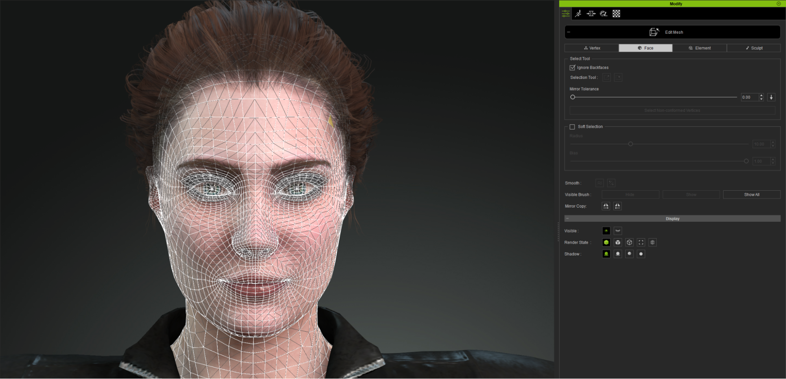
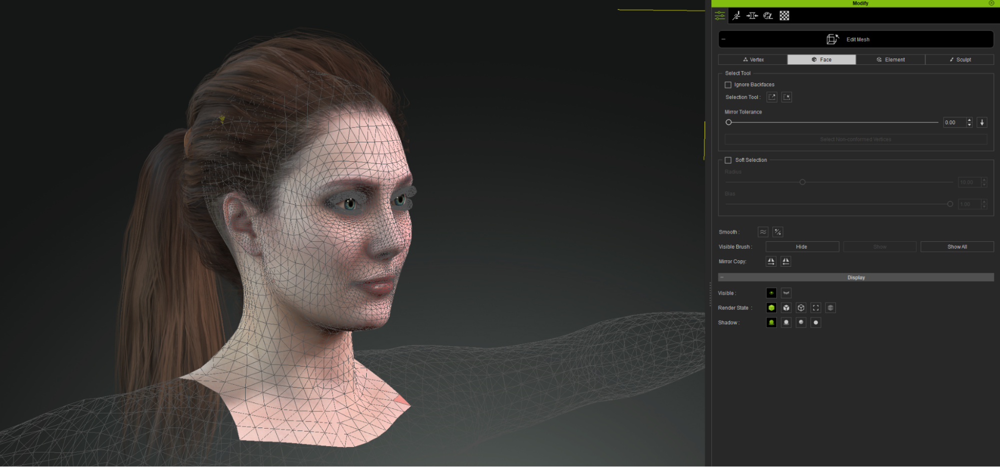
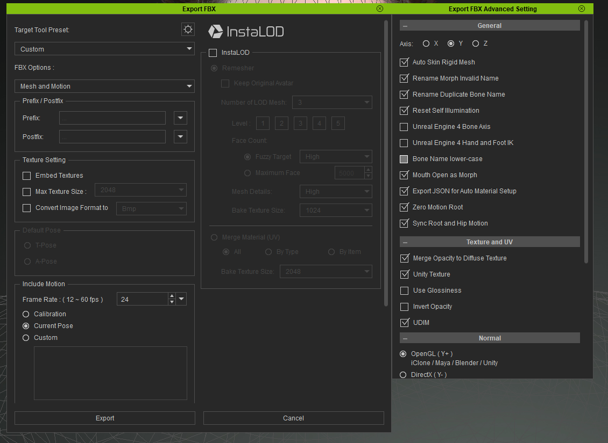
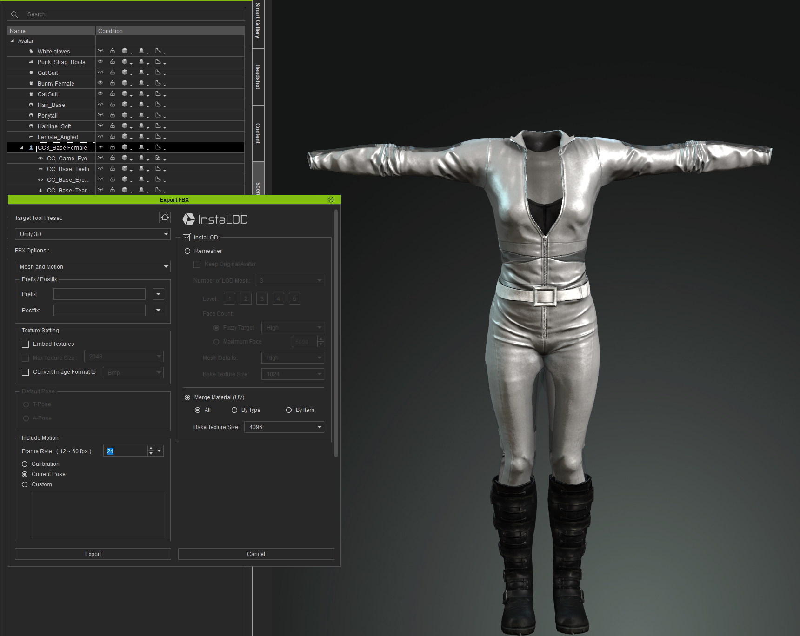
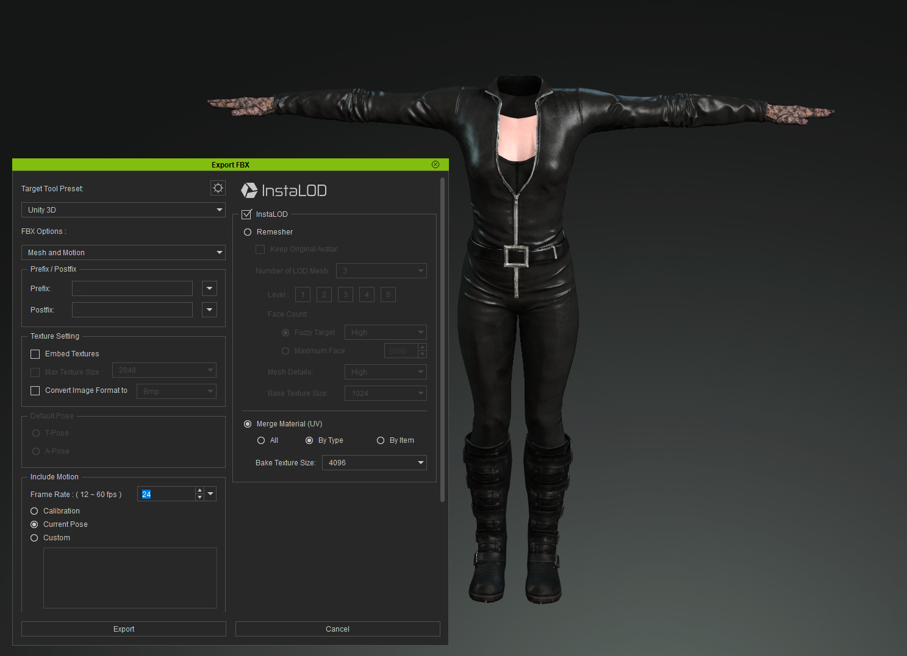

Dynamic Digital Humans Documentation
Character Creation (CC3-Zbrush-Maya Workflow)
This process creates the Character model. Combined with either a structured light scan or a photogrammetry scan of your actor, we use Real Illusions Character Creator, Zbrush and Maya to make the model relatively lightweight and optimized.
1.1 Setup character using Character Creator 3 (CC3)
Create a base CC3+ character using the workflow in the following link: CC3 Pipeline Setup
1.2 Export character to Zbrush
1. Import scanned model into Zbrush
2. Sculpt character to match scanned model
3. Move teeth and eyes to the correct location
4. Move eyelashes and hair to the correct location
5. Export sculpted model
1.3 Import sculpted model into CC3
1. Clean up geometry
2. Make sure the model's topology is symmetrized before export
3. Create textures and fix seams
1.4 Export character (for Mobile VR) - For Unity or Unreal Engine (bone system)
1. Separate head mesh from the body
i. Delete hidden geometry
ii. Optional: Separate eyelashes from the head mesh
iii. Export
 2. Combine clothing meshes together (UV and geometry)
i. Export (Instamesh LOD, Type)
3. Combine clothing meshes together (UV and geometry)
i. Export (Instamesh LOD, Type)
NOTE
CC3 recommended export settings (for mobile VR)
1. Separate head and body
2. Use Mouth_Open as blendshape - removed jaw from animations
3. Combine clothing meshes into one UV
1.5 Adjustments in Maya (combining meshes, keeping head and morph inputs)
1. Import head mesh (imports skinning and skeleton)
i. Reset blendshape animation to 0
ii. Combine repeated materials (eye occlusion, eyelash, tearline)
iii. Select root node and create a bind pose
2. Import DDH Head and DDH Mouth materials
i. Download DDH Material File
ii. Assign DDH Head and DDH Mouth to Display Nodes
iii. Delete unused materials
3. Optional: Combine eyelashes into head
i. Bake blendshapes - convert to separate geometry
ii. Unbing eyelash geometry
iii. Create Eyelashes_Blendshapes for new eyelash geometry targets (Eyelashes_Blink - L/R, Eyelashes_Wide - L/R, Eyelashes_Squint - L/R)
iv. Skin Eyelashes geometry to CC_Base_Head joint
v. Connect (Eye_Blink - L/R, Eye_Wide - L/R, Eye_Squint - L/R) to Head_Blendshapes (through the connection editor)
vi. Assign repeating materials to similar geometry
4. Import clothing
i. Duplicate clothing geometry
ii. Bind
iii. Transfer skinning to CC_Base_Head skeleton
iv. Delete uunused skeleton
5. Import body
i. Unbind geometry and bake positions
ii. Duplicate geometry
iii. Create new optimized UV layout (fill UV area) on new geometry
iv. Using transfer maps, transfer diffuse and normal maps to new UV locations
v. Skin new body to skeleton
vi. Delete old skeleton
6. Import mouth geometry
i. Download Mouth geometry
ii. Fit MouthMask geometry to CC_Base_Teeth geometry
iii. Freeze and reset transformations to origin
iv. Skin MouthMask geometry to CC_Base_Teeth01 and CC_Base_Teeth02
- Unbind geometry and bake positions
- Assign DDH mouth material to MouthMask geometry
v. Create blendshape for "Mouth Open" and connect it in the connection editor
7. Clean up nodes
i. Morph targets - delete unused blendshapes
ii. Make all connections for blendshapes (tearline, occlusion or remove)
iii. Return character to bind pose
iv. Set bind pose on root bone
v. Make sure meshes do not overlap
1.6 Creating/altering blendshapes from Range of Motion (ROM)
Method 1: Use ROM overlay to adjust automated blendshape positions to desired video ROM locations (approximation)
Method 2: Use scan data to align morph target shapes to scan positions
Method 3: Use scan data to create new morph targets using wrap
Use ROM video to correct and/or adjust extreme pose locations in Maya 2020+
1. Set camera plane to fit front projection of actor's face
2. Apply projection head shader to face (using stabilized ROM footage)
i. Keep aspect ration of image plane to fit eyes into position
ii. Load retargeter ROM sequence
iii. Go to poses and update shapes by sculpting on character (in edit mode)
1.7 Exporting character
Select all geometry, select root bone and export to fbx.
In the export settings, enable:
i. Deformed models (skins and blend shapes)
ii. Embed media
Example character FBX export: Download Laura_V5
NOTE
CC3 recommended export settings (for mobile VR)
1. Reset geometry transformations to the origin
2. Delete unused nodes when importing new geometry
3. Bind geometry in original bind pose
4. Create namespaces to keep imported elements separate